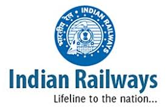

Railway Reservation
Indian Railways (IR) is India's national railway system operated by the Ministry of Railways. It manages the fourth-largest railway network in the world by size, with 121,407 kilometres (75,439 mi) of total track over a 67,368-kilometre route. Forty nine percent of the routes are electrified with 25 KV AC electric traction while thirty three percent of them are double or multi-tracked.
IR runs more than 20,000 passenger trains daily, on both long-distance and suburban routes, from 7,349 stations across India.Indian Railway has a glorious past of more than 150 years serving the nation.The first train consisting of one steam engine and four coaches traversed a stretch of 21-miles between Mumbai and Thane.
Copyright © 2019 Yatra Online Private Limited, India. All rights reserved